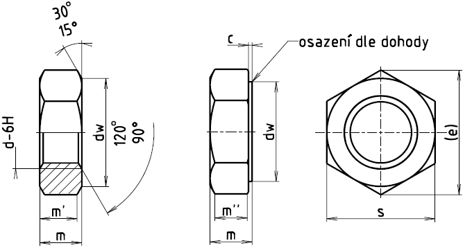

Příklad označení šestihranné matice se závitem M12, pevnostní třídy 05:
ŠESTIHRANNÁ MATICE ISO 4035–M12–05
| Závit d | M1,6 | M2 | M2,5 | M3 | (M3,5) | M4 | M5 | M6 | M8 | M10 |
|---|---|---|---|---|---|---|---|---|---|---|
| rozteč P | 0,35 | 0,4 | 0,45 | 0,5 | 0,6 | 0,7 | 0,8 | 1 | 1,25 | 1,5 |
| da max. | 1,84 | 2,3 | 2,9 | 3,45 | 4,0 | 4,6 | 5,75 | 6,75 | 8,75 | 10,8 |
| da min. | 1,6 | 2,0 | 2,5 | 3,0 | 3,5 | 4,0 | 5,0 | 6,0 | 8,0 | 10,0 |
| dw min. | 2,4 | 3,1 | 4,1 | 4,6 | 5,1 | 5,9 | 6,9 | 8,9 | 11,6 | 14,6 |
| emin. | 3,41 | 4,32 | 5,45 | 6,01 | 6,58 | 7,66 | 8,79 | 11,05 | 14,38 | 17,77 |
| mmax. | 1 | 1,2 | 1,6 | 1,8 | 2 | 2,2 | 2,7 | 3,2 | 4 | 5 |
| mmin. | 0,75 | 0,95 | 1,35 | 1,55 | 1,75 | 1,95 | 2,45 | 2,9 | 3,7 | 4,7 |
| m'min. | 0,6 | 0,8 | 1,1 | 1,2 | 1,4 | 1,6 | 2 | 2,3 | 3 | 3,8 |
| smax. | 3,2 | 4 | 5 | 5,5 | 6 | 7 | 8 | 10 | 13 | 16 |
| smin. | 3,02 | 3,82 | 4,82 | 5,32 | 5,82 | 6,78 | 7,78 | 9,78 | 12,73 | 15,73 |
| Závit | M12 | (M14) | M16 | (M18) | M20 | (M22) | M24 | (M27) | M30 | (M33) |
|---|---|---|---|---|---|---|---|---|---|---|
| rozteč P | 1,75 | 2 | 2 | 2,5 | 2,5 | 2,5 | 3 | 3 | 3,5 | 3,5 |
| da max. | 13,0 | 15,1 | 17,3 | 19,5 | 21,6 | 23,7 | 25,9 | 29,1 | 32,4 | 5,6 |
| da min. | 12,0 | 14,0 | 16,0 | 18,0 | 20,0 | 22,0 | 24,0 | 27,0 | 30,0 | 33,0 |
| dw min. | 16,6 | 19,6 | 22,5 | 24,9 | 27,7 | 31,4 | 33,2 | 38,0 | 42,8 | 46,6 |
| emin. | 20,03 | 23,35 | 26,75 | 29,56 | 32,95 | 37,29 | 39,55 | 45,2 | 50,85 | 55,37 |
| mmax. | 6 | 7 | 8 | 9 | 10 | 11 | 12 | 13,5 | 15 | 16,5 |
| mmin. | 5,7 | 6,42 | 7,42 | 8,42 | 9,1 | 9,9 | 10,9 | 12,4 | 13,9 | 15,4 |
| m'min. | 4,6 | 5,1 | 5,9 | 6,7 | 7,3 | 7,9 | 8,7 | 9,9 | 11,1 | 12,3 |
| smax. | 18 | 21 | 24 | 27 | 30 | 34 | 36 | 41 | 46 | 50 |
| smin. | 17,73 | 20,67 | 23,67 | 26,16 | 29,16 | 33 | 35 | 40 | 45 | 49 |
| Závit | M36 | (M39) | M42 | (M45) | M48 | (M52) | M56 | (M60) | M64 |
|---|---|---|---|---|---|---|---|---|---|
| roztečP | 4 | 4 | 4,5 | 4,5 | 5 | 5 | 5,5 | 5,5 | 6 |
| da max. | 38,9 | 42,1 | 45,4 | 48,6 | 51,8 | 56,2 | 60,5 | 64,8 | 69,1 |
| da min. | 36 | 39 | 42 | 45 | 48 | 52 | 56 | 60 | 64 |
| dw min. | 51,1 | 55,9 | 60 | 64,7 | 69,5 | 74,2 | 78,7 | 83,4 | 88,2 |
| emin. | 60,79 | 66,44 | 71,3 | 76,95 | 82,6 | 88,25 | 93,56 | 99,21 | 104,86 |
| mmax. | 18 | 19,5 | 21 | 22,5 | 24 | 26 | 28 | 30 | 32 |
| mmin. | 16,9 | 18,2 | 19,7 | 21,2 | 22,7 | 24,7 | 26,7 | 28,7 | 30,4 |
| m'min. | 13,5 | 14,6 | 15,8 | 17 | 18,2 | 19,8 | 21,4 | 23 | 24,3 |
| smax. | 55 | 60 | 65 | 70 | 75 | 80 | 85 | 90 | 95 |
| smin. | 53,8 | 58,8 | 63,1 | 68,1 | 73,1 | 78,1 | 82,8 | 87,8 | 92,8 |
| Materiál | Oceli | Antikorozní oceli | Neželezné kovy | |
|---|---|---|---|---|
| Všeobecné požadavky | Mezinárodní norma | ISO 8992 | ||
| Mechanické vlastnosti | Pevnostní třída (materiál) |
pro d < 3 mm: 14H | Pro d≤20mm: A2–70 20 mm < d ≤ 39 mm: A2–50 |
|
| 3 mm < d ≤ 39 mm: 04 05 |
||||
| pro d > 39 mm: podle dohody | ||||
| Mezinárodní normy |
pro d ≤ 39 mm: ISO 898-5 | Pro d≤39mm: ISO 3506 |
ISO 8839 | |
| Pro d > 39 mm: podle dohody |
||||
| Mezní rozměry, tolerance tvaru a polohy | Výrobní třída | A pro výrobky se závitem d ≤ 16mm | ||
| B pro výrobky se závitem d > 16mm | ||||
| Mezinárodní norma | ISO 4759-1 | |||
| Povrch | dle výroby | hladký | hladky | |
| Požadavky na elektrolyticky vyloučené povlaky viz ISO 4042. Jestliže je požadována jiná povrchová ochrana, musí být dohodnuta mezi dodavatelem a odběratelem. Mezní hodnoty povrchových vad viz ISO 6157-1 a ISO 6157-3 |
||||